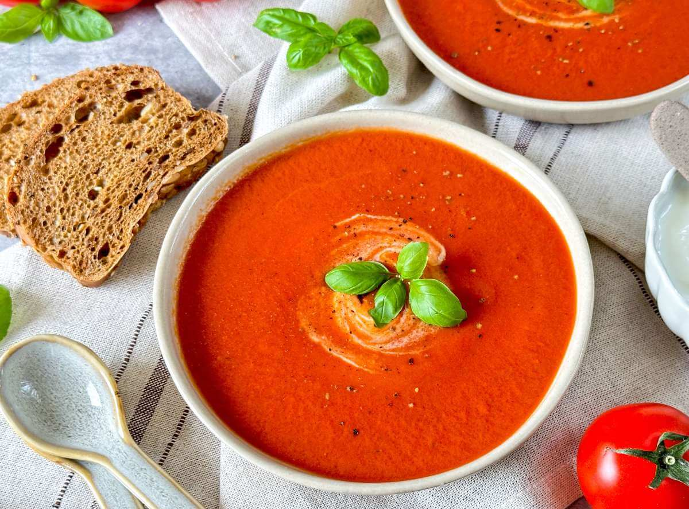

Zutaten:
- 1 kg
- 1
- 1 Zehen
- 600 ml
- 100 ml
- 30 ml
- Tomaten
- Zwiebeln
- Knoblauch
- Gemüsebrühe
- Sahne
- Olivenöl
- Salz
- Pfeffer
- Basilikum
Kochmodus:
Zubereitung:
- 1 Zwiebeln und 1 Knoblauchzehen schälen und schneiden.
- 30 ml Olivenöl in einem Topf erhitzen und die Zwiebeln und den Knoblauch darin glasig dünsten.
- 1 kg Tomaten waschen, vierteln und hinzufügen.
- 600 ml Gemüsebrühe angießen und alles ca. 10 Minuten köcheln lassen.
- Die Suppe pürieren, durch ein feines Sieb geben und 100 ml Sahne hinzufügen.
- Mit Salz, Pfeffer und Basilikum abschmecken.